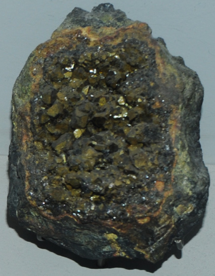

|

| PbFe3(AsO4,SO4)2(OH)6
This sample of beudantite is displayed in the Smithsonian Museum of Natural History. Beudantite is a mineral which contains lead and iron and both sulfate and arsenate groups. It has the composition PbFe3(AsO4,SO4)2(OH)6. This sample is about 6x6 cm and is from Tsumeb, Namibia. It is described as beudantite with carminite and chalcocite.
|